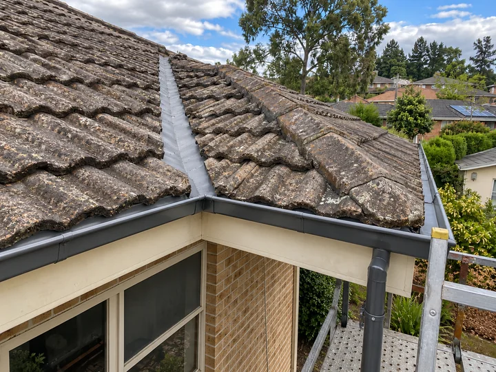
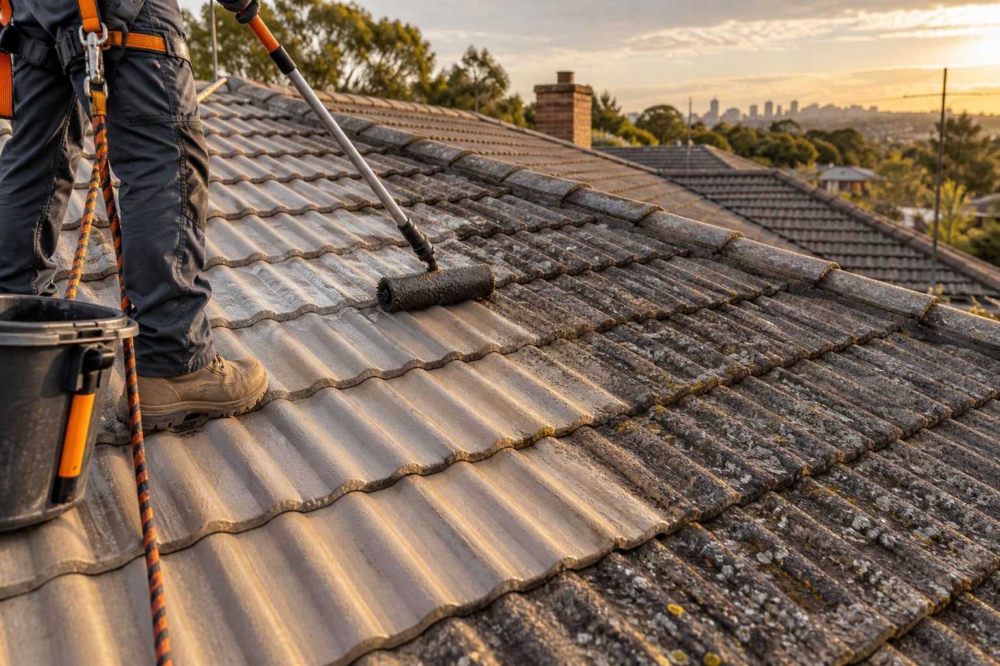
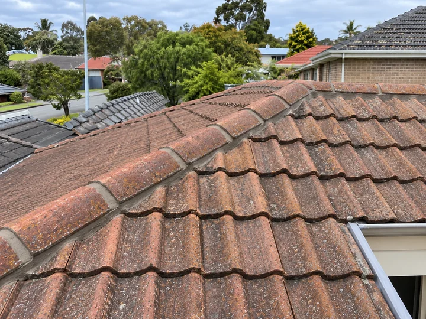
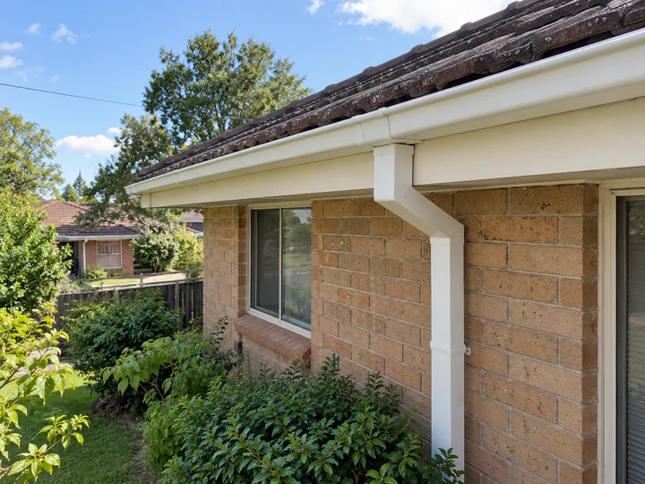
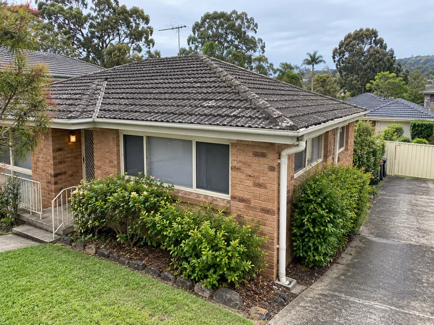
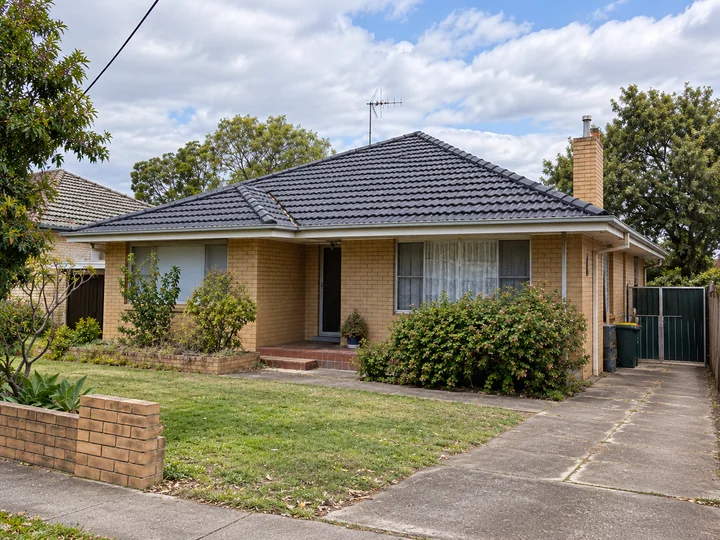
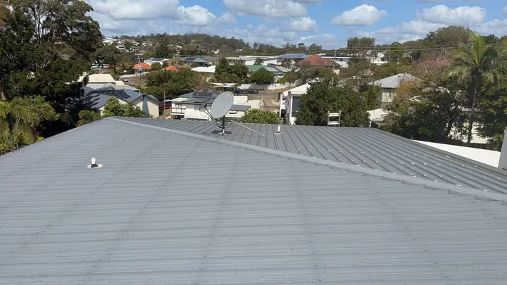
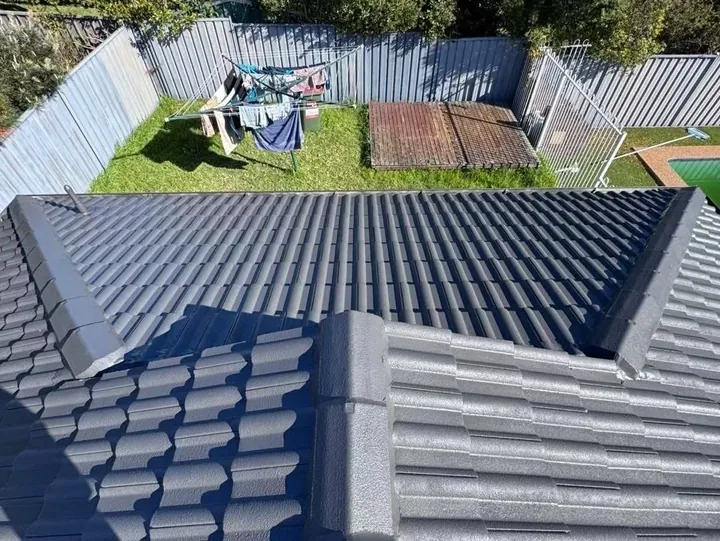
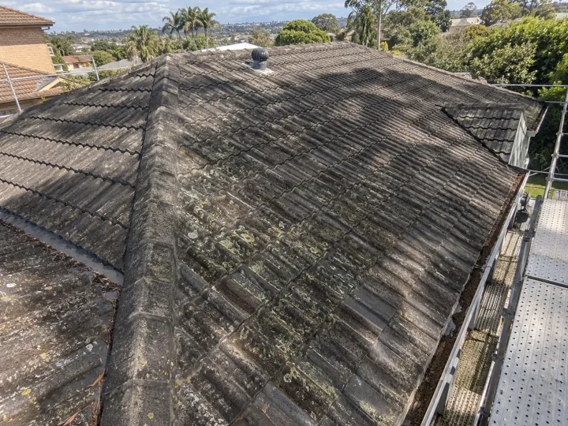
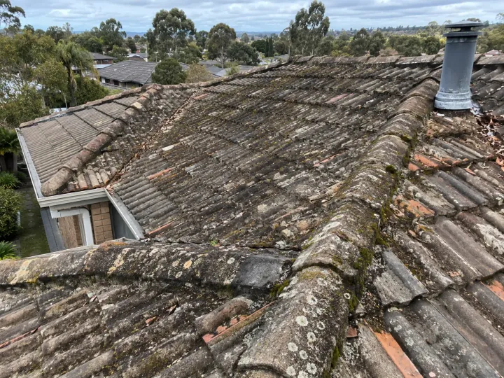

Roof Leak Detection and Repairs
A ceiling stain can be away from the entry point. We trace the water path on site and repair affected tiles, ridges, flashing or drainage.
Explore roof leak repairs
Home / Services
We provide roof repairs, cleaning, painting, restoration and inspections in Adelaide. Tell us what you have noticed. We check the roof, materials and access on site, then provide a written quote. Displayed price ranges are indicative.

A ceiling stain can be away from the entry point. We trace the water path on site and repair affected tiles, ridges, flashing or drainage.
Explore roof leak repairs
We assess damaged tiles, ridge capping, flashing and valleys, then confirm the repair scope on site. Ridge work may include ridge repointing and re-bedding.
Explore tile and ridge repairs
We assess leaks, damaged joints, sagging gutters and downpipe connections, then repair or replace the affected components.
Explore gutter and downpipe repairs
We remove leaves and sediment and check accessible outlets and downpipe flow. Gutter cleaning is separate from component repairs and roof cleaning.
Explore gutter cleaning
We assess weathered roofs and quote the repairs, preparation and suitable finishing needed. Read our repair and restoration decision guide.
Explore roof restoration guidance
We repair metal roof defects after checking the sheets, fixings and junctions. View our Magill inspection and maintenance photographs.
Explore metal roof repairs
We assess the roof material and existing finish, then quote preparation and painting separately from defect repairs. View our Foothills project photographs.
Explore roof painting
We assess the roof material, surface condition and access to plan suitable cleaning. The gallery shows the roof before cleaning.
Explore roof cleaning
We inspect accessible roof areas to help you plan repairs or cleaning. Photographs, reports and fees are agreed when booking.
Explore roof inspectionsNot sure which service fits? Request an on-site assessment with your suburb, the symptom and roof materials if known. Describe only what you can see safely from ground level, plus access constraints and any solar panels or rainwater connections. Do not climb onto the roof. We confirm access and the appointment, then provide a written quote after inspection.
Review our roof assessment process and business details and written warranty information when comparing the proposed work.
Tell us the problem you have noticed. We check the relevant roof components and explain the repairs, materials and access included in your written quote.